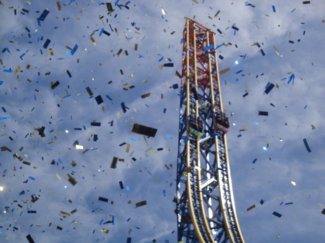
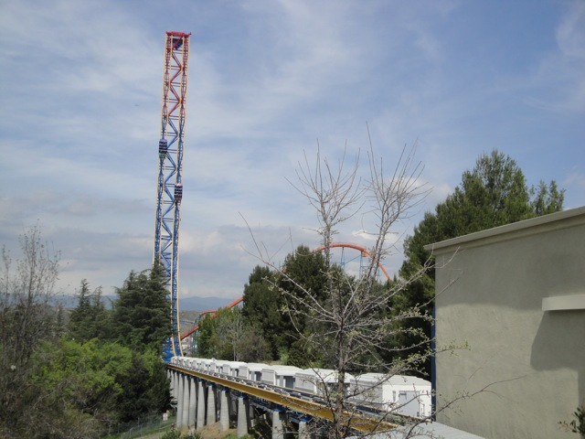
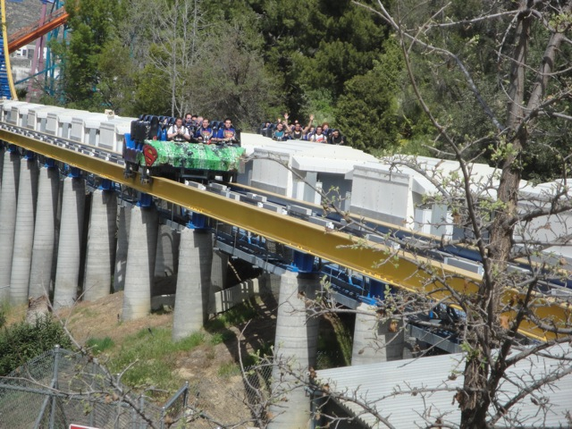

Superman Media Day
Well, I wasn't planning on heading back to Six Flags Magic Mtn until Westcoast Bash. But I got an invite to go to Superman Media Day and I simply couldn't pass it up. Oh, and here's a cool shot of Scream you can get from the Event Parking Lot.
For the event, they gave us these shirts. (And yes, they are backwards, and yes, they are supposed to be like that.)
"Grr!!!! I'm Mr. Bee!!! I was going to sting Cody on Superman as us bees have a fetish for stinging people on rollercoasters, But I couldn't help myself. I just had to sting Cody now!!! Gimme a time machine so I can go an hour into the future and sting everyone riding Superman Backwards!!!!"
All right. Time to head into Six Flags Magic Mountain.
 Soon we will be riding you Backwards Superman. Soon we will be riding you.
Soon we will be riding you Backwards Superman. Soon we will be riding you.
"Hello. I am a clown. I am here to entertain you while you all wait for the park president to talk about Backwards Superman."
Hmm. I wonder if they have enough stuff that says Superman: Escape from Krypton?
To really make Superman Media Day special, they had an ice podium. How awesome.
"Oh Crap!!! The Ice Podium is melting and knocked off the Microphone!!!! Who can save this media day from crumbling?"
This looks like a job for......DUCT TAPE!!!!!!
"Hmm. I wonder what this button does?"
"In case you've been living under a rock for the past year, we now made Superman go backwards. We tried making it go sideways, but that didn't work out, so we had to settle for backwards."
"Wow. You have no idea what my taste in fashion is."
"Hey Kid!!!! Don't push that red button!!!! We already had one idiot try and push it earlier!!!! Don't go push the red..."
"Ahh Crap. Too late."
"Quick!!! Somebody Contact Al Gore!!! Global Warming is getting worse!!! It now appears to be raining confetti!!!!"

They should've renamed it to Superman: Escape from Confetti. That seems to make much more sense for a name.
 "RUN SUPERMAN!!!!! RUN!!!!!!!!!"
"RUN SUPERMAN!!!!! RUN!!!!!!!!!"
"What are you staring at? Is there something in my hair?"
Well that's a first. I've never seen the tram inside the park.
According to Cody, this goose is named Geoffry Sonic. To him, geese live forever.
 I have never seen Orient Express this crowded.
I have never seen Orient Express this crowded.
 Ohh. Shiney New Sign.
Ohh. Shiney New Sign.
The inside is still green. Same as it was during thr technical rehersal.
Unfortunetly, the operations were horrible due to them setting up the cameras to film people. It was kind of like being back at Mt. Olympus. Except not nearly as sucky.
 That's not a girl. That's just Cody wearing his cape.
That's not a girl. That's just Cody wearing his cape.
 "HOLY SH*T!!!! LAUGHING DRAGON PIZZA IS OPEN!!!!!!"
"HOLY SH*T!!!! LAUGHING DRAGON PIZZA IS OPEN!!!!!!"
The best lunch is always a free lunch.
Cookie!!!! The best part of lunch.

I said it before and I said it in my review. Backwards Superman kicks ass!!!!

Later on, we were able to marathon it since most people had already left. That was awesome.
 And we even got a ride on the tram back to Food Etc. Well, this was a really fun day. MUCH better than my typical crappy Wednesday Class Schedule. See you on Saturday for Westcoast Bash Six Flags Magic Mountain.
And we even got a ride on the tram back to Food Etc. Well, this was a really fun day. MUCH better than my typical crappy Wednesday Class Schedule. See you on Saturday for Westcoast Bash Six Flags Magic Mountain.
Home